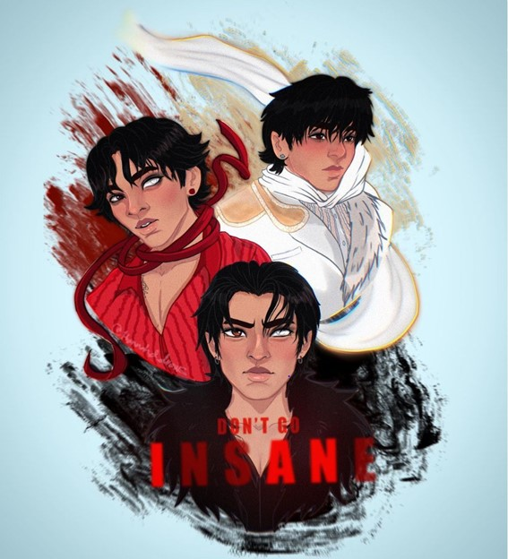
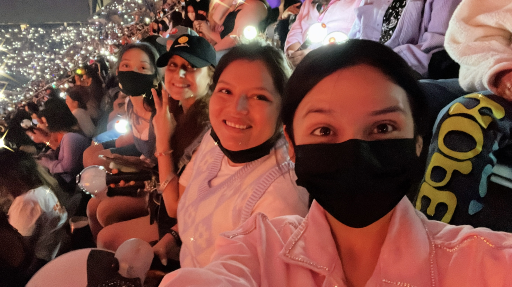

I was born and raised in California. I am currently working on completing my bachelor's degree in Web Development. I am working towards building a career helping to create websites that are fun and unique and tailored to providing positive user experiences.
When I am not working or studying, I enjoy drawing. Since I was a child, I have had a passion for doodling and sketching. I enjoy creating both traditional and digital art, mostly on Procreate. While I enjoy making and sharing my work, I always feel self-conscious because I am not confident in my abilities. However, it brings me joy when others enjoy my work. My proudest achievements as an artist was this past year, when I shared one of my fan arts for my favorite musician on social media and they really loved it!
I love music. Over the past few years, I discovered and fell in love with the K-pop genre. I was stunned by the complexity and creativity that comes with each group and impressed by the hard-work and dedication it takes to commit to being an idol. It's quite fascinating. I love that the K-pop fan base reaches a variety fans from all kinds of backgrounds and age ranges. I am grateful because it has helped me to open up a little more and continue to gain more confidence in myself. I love attending concerts and over past few years I have been able to see some amazing shows and makes some great friends. I look forward to the possibility of making more memorable experiences.
